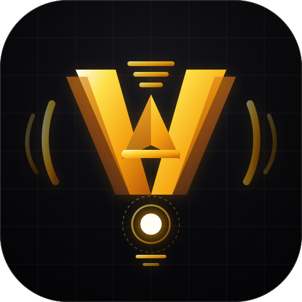
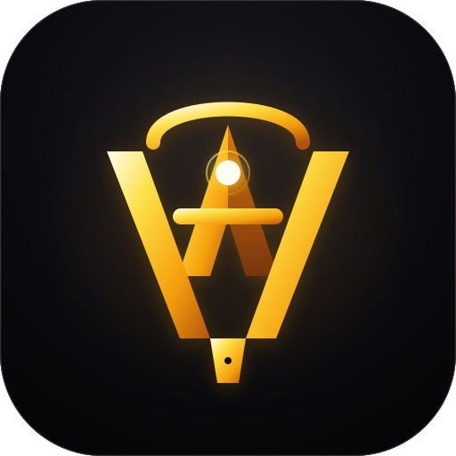
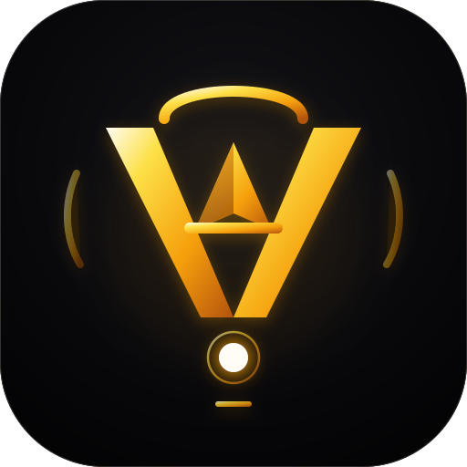

The outer V (Voice) sculpts the studio microphone capsule, acoustic grille louvers, and vocal funnel. The inner A (Agency) ascends upward through the center with its horizontal crossbar anchoring the acoustic diaphragm.

Refined evolution of the mark you liked. Crisp geometric V blades with horizontal top acoustic grille ribs, the ascending 'A' agency chevron, and a high-precision diaphragm node.

Classic studio condenser silhouette (Neumann U87 style) where the rounded top dome and outer V blades frame an interlocking A rising from the base.

Braun/Apple-grade architectural minimalism. Ultra-clean strokes where every line serves triple duty as the letterform, microphone housing, and acoustic waveform.